250.Kochloeffelstaender
Sortiment
Bräter, Dosen, Gewürzsets und weitere nützliche Stücke für Haus und Ferienhaus.
250.Kochloeffelstaender
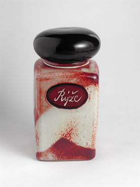
233.Vorratsbehaelter - eckig
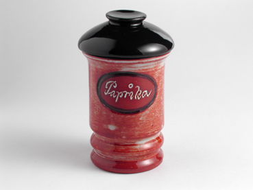
104.Gewuerzedose - rund
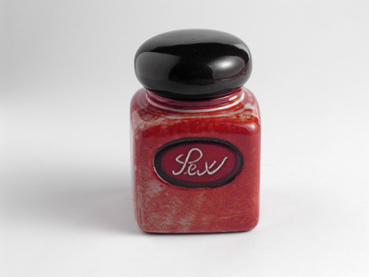
103.Gewuerzedose - eckig
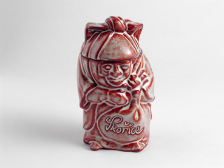
105.Gewuerzedose - klein

21.Bujonschale (fuer Suppen)
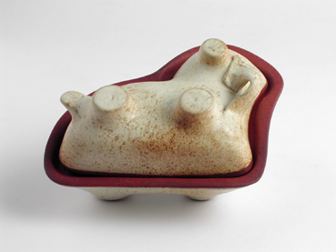
7.Bock - klein (Foermchen)
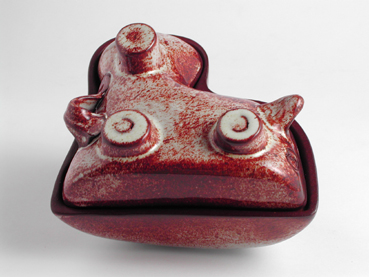
6.Bock (Foermchen)

1.Aroma Fonds (fuer Schokolade)

248.Bratpfanne fuer Aepfel

136.Bratpfanne
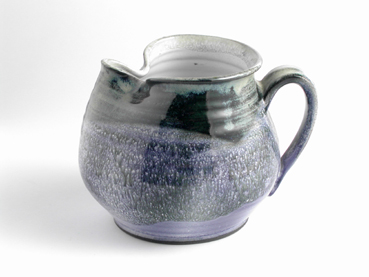
129.Milchkanne bis zu 0.5 l
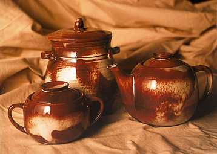
25.Zuckerdose - gegossen , 168.Fettbehaelter mit Deckel bis zu 1.0 l, 88.Kanne - gegossen - bauchfoermig

22.Zitronenpresse

104.Gewuerzedose - rund, 56.Tasse mit Beschriftung - bauchfoermig
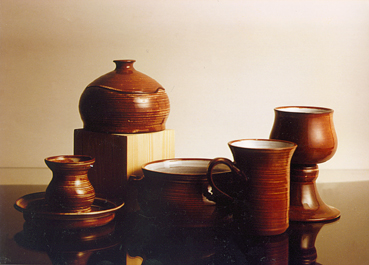
209.Eierbehaelter, 25.Zuckerdose - gedreht, 126.Salatschuessel bis zu 12 cm, 70.Tasse mit Untersetzer - gerade, 148.Weinkelch - gegossen
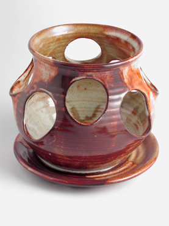
137.Petersilienbehaelter mit Untersetzer
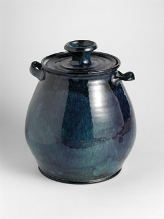
168.Fettbehaelter mit Deckel bis zu 1.0 l
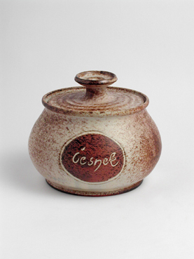
234.Vorratsbehaelter fuer Knoblauch
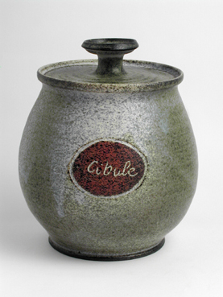
235.Vorratsbehaelter fuer Zwiebeln
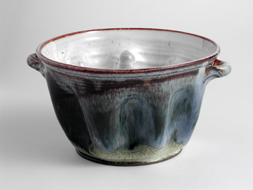
5.grosse Backform (Foermchen)
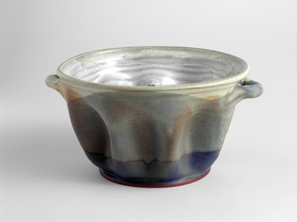
4.kleine Backform (Foermchen)
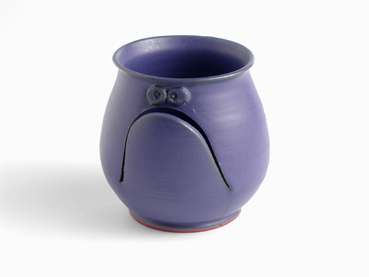
142.Eigelb und Eiweiss Zerteiler
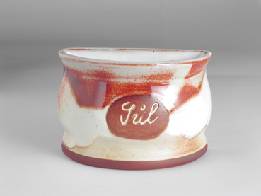
170.Salzfaesschen - geteilt

118.Honigbehaelter

167.Besteckbehaelter

125.Gulaschschale

126.Salatschuessel bis zu 12 cm

191.Teller - 20 cm

192.Teller - 22 cm

198.waermender Untersetzer - klein

197.waermender Untersetzer